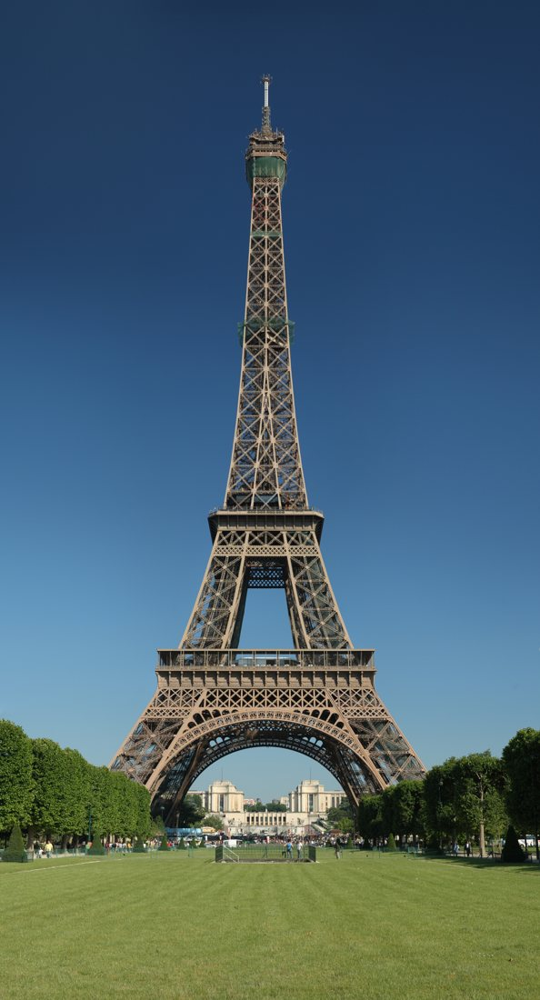
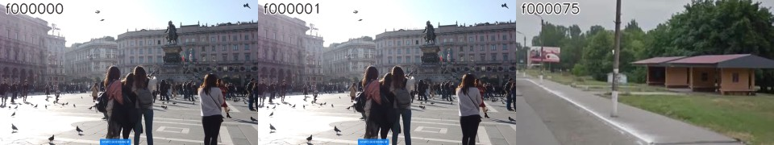
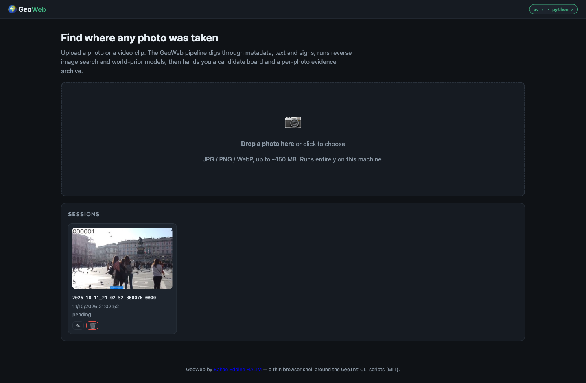
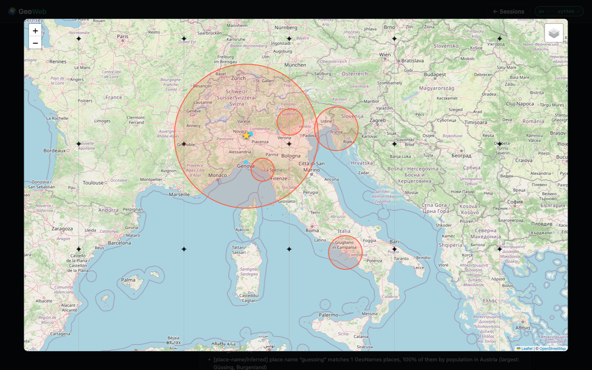
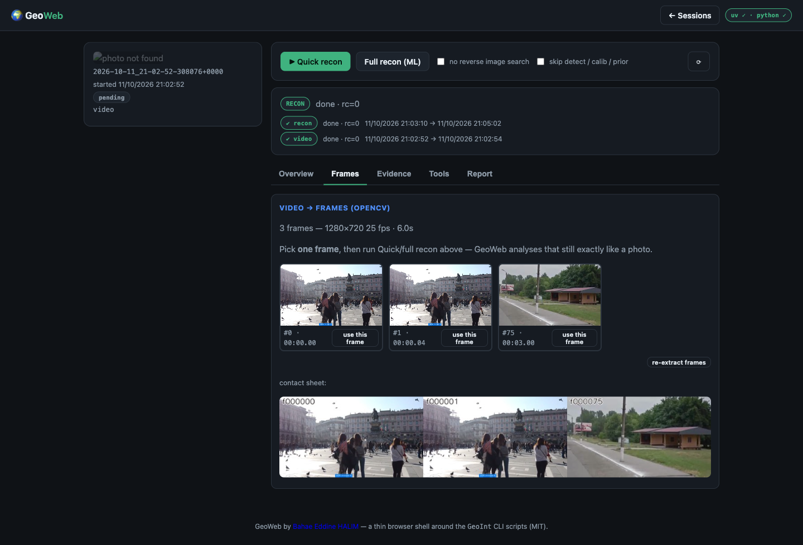

GeoWeb runs a full geolocation recon — metadata, OCR, reverse image search, object detection, camera calibration and learned world priors — and shows you the evidence, not just a guess. Everything runs locally.
# clone and run — no third-party installs for the server
git clone https://github.com/halimbahae/geoweb
cd geoweb && python3 web/app.py --openMost geolocation is a black box. GeoWeb keeps you in control: it raises candidates, shows the evidence, and lets you make the final call.
EXIF, OCR text & signs, reverse-search near-duplicates, detector crops, horizon calibration and a world-prior map — each with a plain-language caveat.
Every step is a real CLI script writing JSON into the session folder. Re-open, re-run, diff and score against ground truth.
Stdlib server, no build step, nothing uploaded. MIT-licensed GeoWeb code on top of the vendored GeoINT engine.
Five photos and two real video clips ship with the repo — freely licensed and GPS-stripped. Seed them and run the full recon: make demos.


Sources & licences: demos/README.md
Every session exports to Markdown, HTML, PDF or JSON — branded with the GeoWeb logo and author — and drafts are kept in your browser so nothing is lost between visits.
The report plus the full recon payload and metadata, straight from the server.
A self-contained, print-ready page with the logo, the run summary and your report — save as PDF from the browser.
Notes auto-save to browser storage per session; reopen and pick up where you left off.
Sessions, a live job bar, an evidence archive and the final call — in three files and a Leaflet drop-in.


Drop a clip; GeoWeb cuts it into a contact sheet of distinct frames (scene change + dHash dedupe), you pick one, and recon runs exactly as for a photo.

GeoWeb ships a Model Context Protocol server. Point your assistant — ChatGPT, Claude, opencode, Cursor, Codex, Copilot CLI or Grok — at your archive and ask in plain language.
One stdio command. Nothing is installed globally — uv fetches the MCP SDK on the fly.
GEOWEB_ROOT=~/geoweb-photos uv run /path/to/geoweb/mcp/geoweb_mcp.pyPick your assistant, hit Copy, drop it in the file shown, then restart the app.
// opencode.json
{
"$schema": "https://opencode.ai/config.json",
"mcp": {
"geoweb": {
"type": "local",
"command": ["uv", "run", "/path/to/geoweb/mcp/geoweb_mcp.py"],
"environment": { "GEOWEB_ROOT": "~/geoweb-photos" },
"enabled": true
}
}
}Or run opencode mcp add geoweb and follow the prompts.
# Claude Code — one command (user scope)
claude mcp add geoweb --scope user \
--env GEOWEB_ROOT=~/geoweb-photos \
-- uv run /path/to/geoweb/mcp/geoweb_mcp.py// Claude Desktop — claude_desktop_config.json
{
"mcpServers": {
"geoweb": {
"command": "uv",
"args": ["run", "/path/to/geoweb/mcp/geoweb_mcp.py"],
"env": { "GEOWEB_ROOT": "~/geoweb-photos" }
}
}
}Remote MCP (SSE) is also supported for Claude web/desktop connectors — see the ChatGPT tab.
# Expose GeoWeb over SSE, then add it as a Connector
GEOWEB_ROOT=~/geoweb-photos uv run /path/to/geoweb/mcp/geoweb_mcp.py \
--transport sse --port 8989
# ChatGPT → Settings → Connectors → Advanced → Developer mode
# Add MCP server URL: http://127.0.0.1:8989/sseChatGPT (and Claude web) reach the server over HTTP — expose the port with a tunnel such as cloudflared or ngrok. Same URL works for any remote-MCP client.
// .cursor/mcp.json (project) or ~/.cursor/mcp.json
{
"mcpServers": {
"geoweb": {
"command": "uv",
"args": ["run", "/path/to/geoweb/mcp/geoweb_mcp.py"],
"env": { "GEOWEB_ROOT": "~/geoweb-photos" }
}
}
}# ~/.codex/config.toml
[mcp_servers.geoweb]
command = "uv"
args = ["run", "/path/to/geoweb/mcp/geoweb_mcp.py"]
env = { GEOWEB_ROOT = "~/geoweb-photos" }// ~/.copilot/mcp-config.json
{
"mcpServers": {
"geoweb": {
"type": "local",
"command": "uv",
"args": ["run", "/path/to/geoweb/mcp/geoweb_mcp.py"],
"env": { "GEOWEB_ROOT": "~/geoweb-photos" },
"tools": ["*"]
}
}
}# ~/.grok/config.toml
[mcp_servers.geoweb]
command = "uv"
args = ["run", "/path/to/geoweb/mcp/geoweb_mcp.py"]
env = { GEOWEB_ROOT = "~/geoweb-photos" }List and read any session, its jobs and recon summary.
Kick off a quick or full recon, watch it finish.
Inspect video frames and any artifact inside a session.
Full guide with every client: mcp/README.md
Static pages only — the console itself runs on your machine because your photos never leave it.